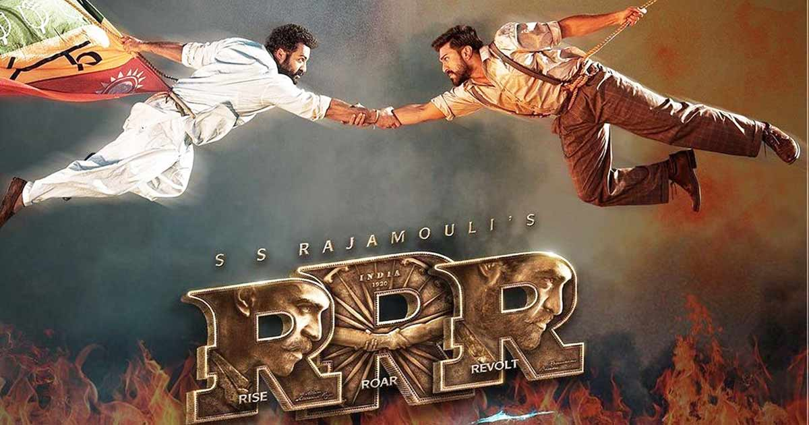
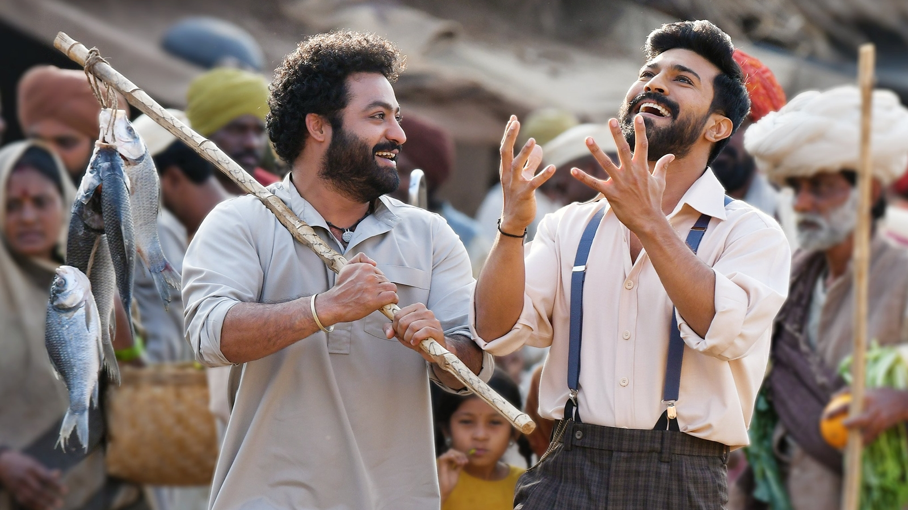

RRR is a 2022 Indian Telugu-language epic period action drama film directed by S. S. Rajamouli, who co-wrote the film with V. Vijayendra Prasad. It was produced by D. V. V. Danayya of DVV Entertainment. The film stars N. T. Rama Rao Jr. and Ram Charan alongside an ensemble cast with Ajay Devgn, Alia Bhatt, Shriya Saran, Samuthirakani, Ray Stevenson, Alison Doody, and Olivia Morris playing supporting roles. It is a historical fiction film about two Indian revolutionaries, Alluri Sitarama Raju (Charan) and Komaram Bheem (Rama Rao), their friendship, and their fight against the British Raj. Made on a budget of ₹550 crore (US$69 million), RRR is the second-most expensive Indian film to date.
The film was released theatrically on 25 March 2022. With ₹223 crore (US$27 million) worldwide on its first day, RRR recorded the highest opening-day earned by an Indian film. It emerged as the highest-grossing film in its home market of Andhra Pradesh and Telangana, grossing over ₹405.9 crore (US$49 million). The film grossed ₹1,387.26 crore (US$170 million) worldwide, setting several box office records for an Indian film, including the third highest-grossing Indian film, the second highest-grossing Telugu film, the highest grossing Telugu film of 2022 and the highest grossing Indian film of 2022 worldwide.
RRR received universal critical acclaim for its direction, screenwriting, cast performances, cinematography, soundtrack, action sequences and VFX. The film was considered one of the ten best films of the year by the National Board of Review, making it only the seventh non-English language film ever to make it to the list.[9] The song "Naatu Naatu" won the Oscar for Best Original Song at the 95th Academy Awards, making it the first song from an Indian film, as well as the first from an Asian film, to win in this category. This made the film the first Indian film by an Indian production to win an Academy Award.[10][11] The film became the third Indian film and first Telugu film to receive nominations at the Golden Globe Awards, including Best Foreign Language Film, and won Best Original Song for "Naatu Naatu", making it the first Indian (as well as the first Asian) nominee to win the award.[12][13] RRR also won the awards for Best Foreign Language Film and Best Song at the 28th Critics' Choice Awards. At the 69th National Film Awards, the film won six awards, including Best Popular Feature Film, Best Music Direction (Keeravani) and Best Male Playback Singer (Kaala Bhairava for "Komuram Bheemudo").
PLOT:--
During the British Raj in 1920, Governor Scott Buxton and his wife Catherine visit a forest in Adilabad, where they abduct Malli, an artistically talented young girl from the Gond tribe. The tribe's guardian Komaram Bheem embarks for Delhi to rescue her, disguising himself as a Muslim named Akhtar. The Nizamate of Hyderabad, sympathetic to the Raj, warns Buxton's office of the impending danger and advises them to return the child. Undeterred, Catherine enlists A. Rama Raju, an ambitious Indian Imperial Police officer, to quell the threat, promising a promotion should he capture Bheem alive.
Raju and his uncle Venkateswarulu attend a pro-independence gathering in disguise, where Bheem's aide Lachhu attempts to recruit them into Bheem's plot. On the way to Bheem's hideout, Lachhu discerns Raju's identity and flees. Shortly afterward, Raju and Bheem witness a child getting trapped by a train wreck and work together to rescue him. Unaware of their opposing allegiances, they form a close friendship.
Meanwhile, Raju locates Lachhu and apprehends him. While being interrogated, Lachhu sets a banded krait onto Raju and warns him of his imminent death and that the antidote is only known to the Gonds. Bheem finds Raju, saves his life, and divulges his tribal identity and mission, unaware of Raju's true identity. That night, at an event to honour Governor Buxton, Bheem's men barge into his residence with a lorry filled with wild animals, creating havoc among the guests. Raju arrives and fights Bheem; Bheem is forced to stand down when Buxton holds Malli at gunpoint. Bheem is arrested and Raju is promoted.
A flashback reveals that Raju's father Alluri Venkatarama Raju was a revolutionary who hoped to arm his village with British rifles but was killed by British soldiers before he got the chance. Raju subsequently left his village and his fiancee Sita to become a mole within the police, his promotion for having captured Bheem finally giving him access to the gun shipments. At Bheem's public flogging, Raju attempts to persuade him to recant his actions; Bheem chooses flogging instead. Bheem sings in defiance of his injuries, inciting the assembled crowd into rebellion, and further enlightening Raju. He persuades Buxton to execute Bheem in secrecy in front of Malli while preparing an ambush to rescue both of them, but Buxton discovers the plan, and Raju is injured while rescuing Malli. Bheem, thinking Malli is in danger, bludgeons Raju and escapes with the girl. Raju is arrested for treason and imprisoned in solitary confinement.
Months later, Bheem, who is hiding with his group and Malli in Hathras, is cornered by the colonial authorities. He narrowly avoids being exposed when Sita repels them by claiming there is a smallpox epidemic. Unaware of Bheem's identity, she reveals Raju's anti-colonial objectives and his impending execution. Realising his folly, Bheem vows to save him. With Jenny's sympathetic assistance, Bheem infiltrates the barracks where Raju is detained and frees him. The pair retreat to a nearby forest, where they defeat soldiers with a longbow taken from a Rama shrine and a spear. Taking the fight to Buxton, they hurl a flaming motorcycle into the barracks' magazines, setting it afire. Bheem steals a cache of guns for Raju before the barracks explode, killing many soldiers and Catherine. Cornering a wounded Buxton, Raju has Bheem execute him with a British rifle, fulfilling their respective objectives. Raju is reunited with Sita, and Bheem is reunited with his tribe. To mark the mission's successful completion, Raju asks Bheem to make a wish he can grant; Bheem asks Raju to provide education for him and his community.
 Starring:--
Directed by : S. S. Rajamouli
Dialogues by : Sai Madhav Burra
Story by : V. Vijayendra Prasad
Produced by : D. V. V. Danayya
Cinematography :K. K. Senthil Kumar
Visual effects by :V. Srinivas Mohan
Music by : M. M. Keeravani
Production company :DVV Entertainment
Distributed by :
Release date : 25 March 2022
Running time : 182 minutes
Country : India
Budget : ₹550 crore
Box office : ₹1,387.26 crore